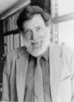

John Hollander

John Hollander is the A. Bartlett Giamatti Professor of English at
Yale and a chancellor of the Academy of American Poets. His many
honors include the Bollingen Prize in Poetry (with Anthony Hecht,
1983) and a MacArthur Foundation Fellowship.
Back to The Double-Dactyl Page
Back to The Stinky Poets' Collective